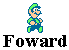

My Intro
Greetings, fellow future comic makers! This is CodieKitty of the Super Nintendo Super Shire. I noticed Jay was having trouble writing this section, so I wrote this for him giving him a break. It took me months just to learn the basic stuff and even longer to learn the advance stuff. Fortunantly for the rest of you, you all can learn the basic stuff in 6 easy steps(the advanced process is up to you to learn). Unfortunantly for those of you using a Mac, you may have trouble reading this for it's designed for a PC. I don't believe in Macs, but see what you can use. I wrote everything at once, so everything you need to know is right here. I am only going over the basics in comic making. I am not going over advanced steps and I'm not going into depth on how to use the emulators. That's up to you.
At the bottom of the page you'll see two or three pictures bearing either of the Mario Bros or with Fred the Spanyard. When you've finished memorizing or copying or doing whatever you want with the step, click Luigi to go onto the next step or Mario to go back to the last step. At any time you wish to return to NC, click Fred in the middle of the page.
